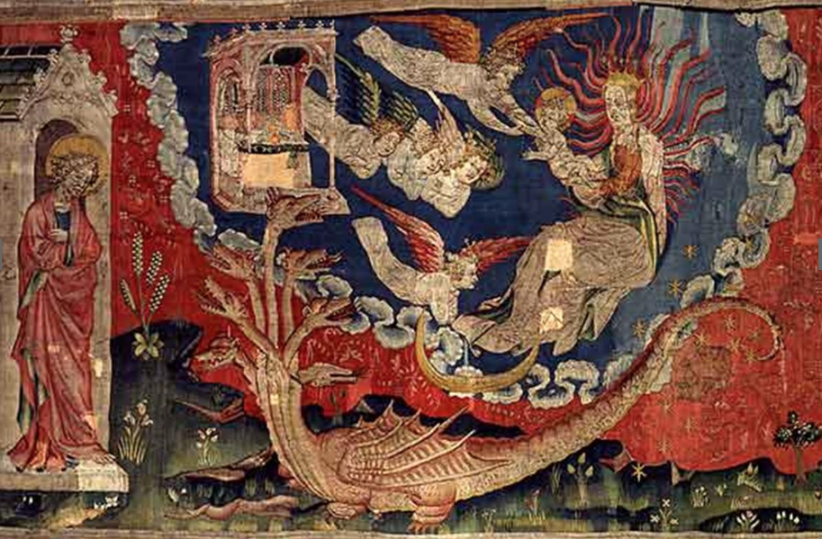
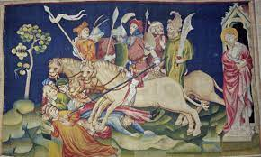

➥

This picture is a part of the apocalypse tapestry. This tapestry is located in the caste of Angers and was ordered by the duke Louis 1st in 1375.
It has been done by Hennequin de Bruges and Nicolas Bataille.
This tapestry is 140 meters long and 4,50 meters high. It is the biggest medieval tapestry that we can find in the world at our time.
This whole artwork is telling the Jean's Apocalypse.
They began the creation in 1373 and finished it in 1382. It took 9 years to finish it completely.
